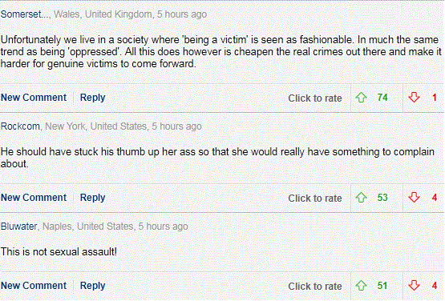

After seeing a picture of former Presidents gathered to discuss hurricane disaster relief, actress Heather Lind wrote a social media post alleging an untoward encounter by former President George H.W. Bush four years ago. Following that, MSN—the MSM’s fountainhead of fair and unbiased coverage—released a new bombshell, “Heather Lind accuses ex-Prez George H.W. Bush of sexual assault“, documenting allegations from this now-deleted Instagram post which was hashtagged #MeToo.
It begins:
“I found it disturbing because I recognize the respect ex-presidents are given for having served. And I feel pride and reverence toward many of the men in the photo. But when I got the chance to meet George H. W. Bush four years ago to promote a historical television show I was working on, he sexually assaulted me while I was posing for a similar photo,” Lind, 34, wrote.
“He didn’t shake my hand. He touched me from behind from his wheelchair with his wife Barbara Bush by his side. He told me a dirty joke. And then, all the while being photographed, touched me again. Barbara rolled her eyes as if to say ‘not again.’ His security guard told me I shouldn’t have stood next to him for the photo.”
Uh oh! Then this:
“It seems to me a President’s power is in his or her capacity to enact positive change, actually help people, and serve as a symbol of our democracy. He relinquished that power when he used it against me and, judging from the comments of those around him, countless other women before me,” Lind wrote.
Further, she indicated that she came forth following others telling their stories. As the article concludes, the Harvey Weinstein mess appears to be the background for this, which perhaps involved more than a pat on the butt by the famous Hollywood mogul.
So what really happened?

Comments at the Daily Mail are fierce!
The article doesn’t give us much to go on here. Did Bush the Elder perhaps nudge her in the backside? That seems to be what this is driving at, but the specifics are unclear. Was it an inadvertent shoulder brush, or something intentional? Did it even happen this way?
As for his side of the story, we don’t have too much to go on here. However, the writeup by the Daily Mail includes the following aftermath, delivered by a spokesman:
President Bush would never—under any circumstance—intentionally cause anyone distress, and he most sincerely apologizes if his attempt at humor offended Ms. Lind.
Could this have been the limerick beginning “There once was a man from Nantucket”? Without further background on it, that’s really hard to say—once again, did it even happen this way? Hell, the guy is known for apologizing for everything, including the well-deserved “misguided Marin County hot-tubber” comment about John Walker Lindh (hopefully not a relative).
All this puts me in a very odd position here, doing something I never expected I’d do: stand up for Bush the Elder, once at the forefront of a thundering herd of neoconservative RINOs. This is the guy who thought The Simpsons was too sassy for his tastes. During his presidency, the media had to make a big deal out of his dislike for broccoli, apparently during a slow news day or something. Further, he’s been suffering from severe health problems since 2000. All told, if these allegations turn out to be true—a pretty big “if” given that it’s basically a one-sided story at this point—then the most probable conclusion is that Bush the Elder was having a senior moment.
Dear Reader, suppose that you were in a retirement home, waiting to see an aged relative. Then a little old lady rolls up in a wheelchair, executes an Elderly Opener maladroitly, and botches a Kino Escalation—perhaps even patting you on the butt. Would your response be any of the following?
- Laugh it off and give Mildred a big hug.
- Point out the old feller looking wistfully from the corner; “He looks like a nice guy, and I find it touching that yours was the last generation that truly appreciated productive men with pleasant personalities.”
- Thank her for her service in the WAVES, defending San Francisco and Los Angeles from imminent conquest by the Japs.
- File a police report against the dirty old lady.
All the above are wrong answers. You’re supposed to blog about the encounter four years later!
Conclusion
Was a thirty-year-old starlet, standing beside several others—including the former First Lady—truly at risk from an old guy in a wheelchair who hadn’t held the reins of power since Bill Clinton took over in January 1993? Some truly heinous things do happen sometimes, but this doesn’t seem to be one of them. There was no element of blackmail, potential career damage, or threat of force. Why did this story even surface—was it a slow news day once again?
Perhaps flimsy allegations with nothing beyond a little uncomfortableness finally have jumped the shark. One could only hope.
Read More: New Evidence Suggests Mattress Rape Victim Emma Sulkowicz Made It Up